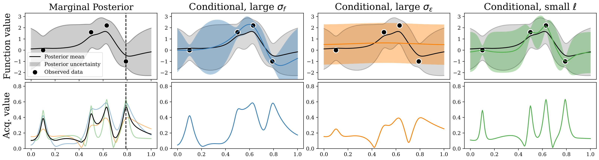

Publications

Self-Correcting Bayesian Optimization through Bayesian Active Learning
Preprint 2023
Abstract of the article goes here.

Joint Entropy Search for Maximally-Informed Bayesian Optimization
NeurIPS 2023
Abstract of the article goes here.
πBO: Augmenting Acquisition Functions with User Beliefs for Bayesian Optimization
ICLR 2023
Abstract of the article goes here.